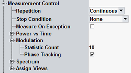

The "Measurement Control" parameters configure the scope of the measurement.
See also: "Statistical Settings"

Defines how often the measurement is repeated if it is not stopped explicitly or by a failed limit check.
- Continuous: The measurement is continued until it is explicitly terminated; the results are periodically updated.
- Single-Shot: The measurement is stopped after one statistics cycle.
Single-shot is preferable if only a single measurement result is required under fixed conditions, which is typical for remote-controlled measurements. Continuous mode is suitable for monitoring the evolution of the measurement results in time and observe how they depend on the measurement configuration, which is typically done in manual control. The reset/preset values therefore differ from each other.
- None: The measurement is performed according to its "Repetition" mode and "Statistic Count", irrespective of the limit check results.
- On Limit Failure: The measurement is stopped as soon as one of the limits is exceeded, irrespective of the repetition mode set. If no limit failure occurs, it is performed according to its "Repetition" mode and "Statistic Count". Use this setting for measurements that are intended for checking limits, e.g. production tests.
Specifies whether measurement results that the R&S CMW identifies as faulty or inaccurate are rejected. A faulty result occurs e.g. when an overload is detected. In remote control, the cause of the error is indicated by the "reliability indicator".
- Off: Faulty results are rejected. The measurement is continued; the statistical counters are not reset. Use this mode to ensure that a single faulty result does not affect the entire measurement.
- On: Results are never rejected. Use this mode e.g. for development purposes, if you want to analyze the reason for occasional wrong transmissions.
Defines the number of measurement intervals per measurement cycle (statistics cycle, single-shot measurement). This value is also relevant for continuous measurements, because the averaging procedures depend on the statistic count.
The measurement interval is completed when the R&S CMW has measured the complete number of captured bursts. The conformance specification stipulates a minimum number of chips, to which the statistic count should be adjusted.
See also: "Statistical Results"
Enables phase tracking.
With phase tracking, the measurement algorithm estimates the frequency and phase within smaller sections of the captured burst and compensate for this. It improves the calculation of EVM for bursts whose phase/frequency offset varies significantly. For an ideal signal, there is no noticeable change in the EVM (offset or absolute) when phase tracking is enabled.
Remote command:Selects the view types to be displayed in the "Overview" dialog. The R&S CMW does not evaluate the results for disabled views. Therefore, limiting the number of assigned views can speed up the measurement.